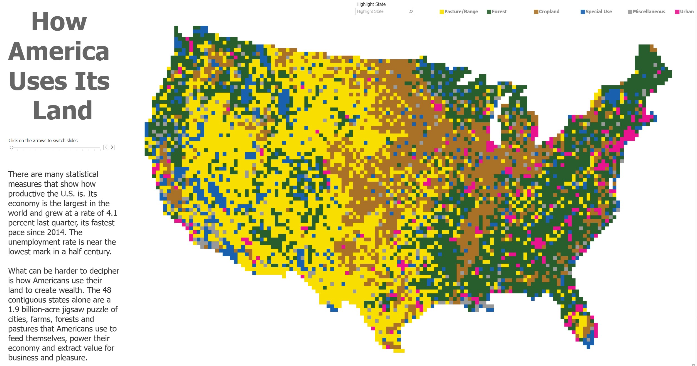

Never in all their history have men been able truly to conceive of the world as one: a single sphere, a globe, having the qualities of a globe, a round earth in which all the directions eventually meet, in which there is no center because every point, or none, is center — an equal earth which all men occupy as equals. The airman's earth, if free men make it, will be truly round: a globe in practice, not in theory.
Science cuts two ways, of course; its products can be used for both good and evil. But there's no turning back from science. The early warnings about technological dangers also come from science.
What was most significant about the lunar voyage was not that man set foot on the Moon but that they set eye on the earth.
A Chinese tale tells of some men sent to harm a young girl who, upon seeing her beauty, become her protectors rather than her violators. That's how I felt seeing the Earth for the first time. I could not help but love and cherish her.
For those who have seen the Earth from space, and for the hundreds and perhaps thousands more who will, the experience most certainly changes your perspective. The things that we share in our world are far more valuable than those which divide us.
Education
I have achieved several educational milestones throughout my academic journey. I obtained my Bachelor's degree in Urban and Regional Planning from Brigham Young University (BYU) in April 2022. Following that, I pursued a Master's degree in Public Administration, which I am on track to complete in April 2024.
In addition to my degrees, I have also taken on leadership responsibilities as the founding president of the BYU Government Finance Officers Association (GFOA) Student Chapter. This role allowed me to showcase my leadership skills and actively contribute to extracurricular activities related to my field of study.
My educational accomplishments highlight my commitment to advancing my knowledge and expertise in my field of interest. It all began with my Bachelor's degree in Urban and Regional Planning from BYU, and I am now on my way to completing a Master's degree in Public Administration, which will further enhance my qualifications.
Moreover, my involvement in the BYU GFOA Student Chapter demonstrates my initiative in taking on leadership roles and my dedication to professional development. These achievements collectively reflect my passion for academic excellence and active engagement in extracurricular activities related to my field of study.
Experience
During my professional journey, I have gained diverse experience through my work in various roles. Currently at Clearwater Financial, i work as a Grant Administration Analyst. I am honing my skills in financial management and grant administration, ensuring compliance with funding requirements and maximizing project outcomes.
Working with Tom Toronto GIS Special Projects, I gained expertise in geographic information systems (GIS) and engaged in special projects, utilizing data analysis and visualization to support decision-making.
As an AAG Project Presenter, I had the opportunity to present projects to clients and stakeholders, developing effective communication and presentation skills.
My involvement in the Springville Utah Downtown Redevelopment and Fairfield Utah General Plan Update projects allowed me to contribute to urban planning and community development efforts, including redevelopment strategies and general plan updates.
These experiences have provided me with a diverse skill set and a comprehensive understanding of various aspects of financial management, GIS, project presentation, and urban planning.
 See this Live Tabluea map of how your land is being used: Map credit to Alexander VarmolovSkills
Public Administration - I possess a diverse range of skills in various areas. Firstly, I have expertise in Public Administration, which reflects my knowledge and understanding of administrative principles and practices in the public sector. This skill is particularly valuable in roles that involve working with government agencies or organizations that provide public services.
Urban and Regional Planning - Secondly, I am skilled in Urban and Regional Planning, which involves understanding and developing plans for the efficient use of land, resources, and infrastructure in urban and regional areas. This skill is particularly relevant in roles that involve city planning, regional development, or community development.
GIS - Thirdly, I have proficiency in Geospatial Information Systems (GIS), which involves the collection, analysis, and interpretation of geographic data. This skill is valuable in roles that require mapping, spatial analysis, or data visualization using GIS software.
Financial Development - My knowledge of financial management, fundraising, and resource mobilization strategies is adaptable to any organization. These skills are particularly relevant in roles that involve financial planning, budgeting, or fundraising for nonprofit organizations, government agencies, or private enterprises.
Information Systems - My ability to understand and manage information technology systems, including hardware, software, and networks can be used i liu of other multiple higher options for small time issues. These skills are valuable in roles that involve information technology management, data analysis, or system administration.
Excel - A widely used spreadsheet software for data analysis, financial modeling, and reporting, i have trained extensively in a vareity of skills concerning this tool. This skill is valuable in roles that involve data manipulation, financial analysis, or reporting using Excel.
What is Economic Development · Video by YouTube Video Showing Economic Development